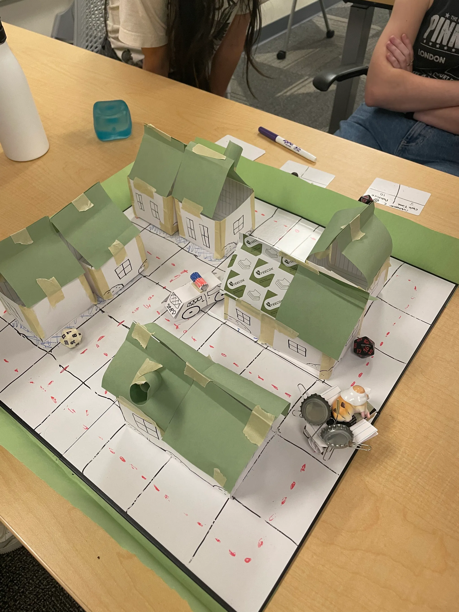
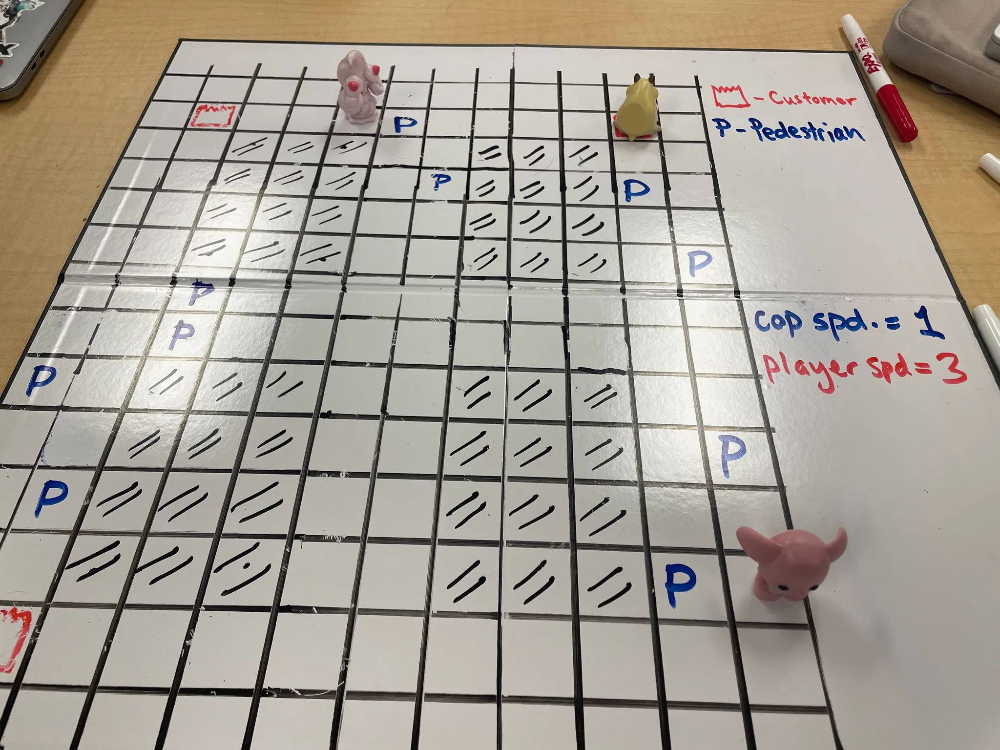
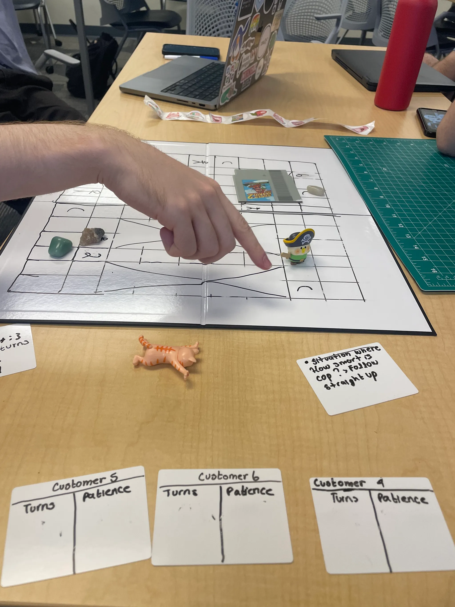
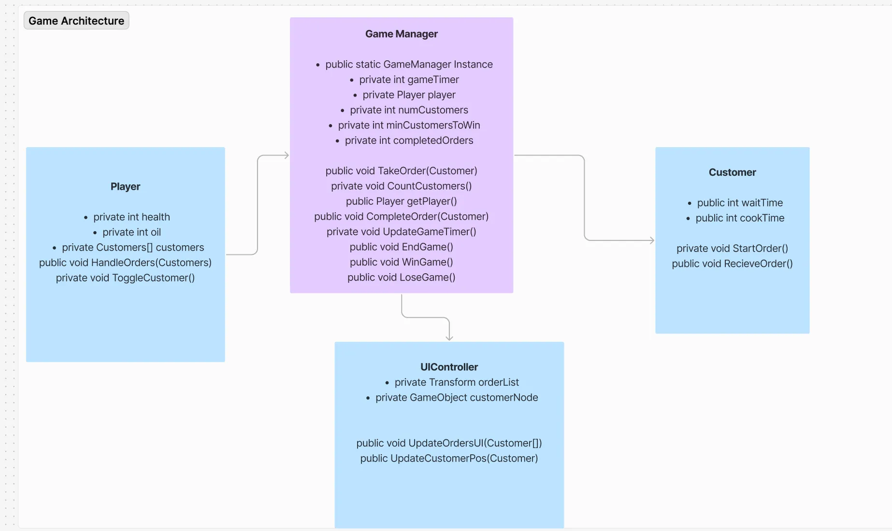

Brief Overview
Grub Bug is a fast-paced 3D Isometric action game that incorporates elements of resource management, chaotic cooking and high-speed driving into a packaged experience. We were inspired a lot by games like Diner Dash, Overcooked, and Grand Theft Auto. Thematically, the game draws from the real-world struggles of street food vendors who navigate less than ideal environments to make ends meet, with elements of cartoon humor.
Project Management & Development Process
Team Structure & Management
As Project Lead, I organized the team into three specialized units:
Programming Team
- Game script development in Unity/C#
- Architecture specification creation
- Debugging and optimization
- Asset integration
- Development tools creation
Art Team
- Concept art development
- Character design
- Asset creation and animation
- Art specification management
- Promotional material creation
Sound Team
- Audio design mood boarding
- Music composition
- Sound effect creation
- Audiovisual specification
Development Timeline & Milestones
Initial Concept
Non-Digital Prototype
Gameplay Prototype
Technical Prototype
Alpha Release
Beta Release
Golden Master
Initial Concept Phase
Led team through concept pitches and core game definition:
A fast-paced game where players manage an unlicensed food cart, cooking and delivering orders while evading law enforcement.
Non-Digital Prototype Phase



Digital Prototype Phase
Architecture Specification

Initial Gameplay Implementation
Project Management Tools
- Figma - Architecture & Design Specs
- Jira - Agile Task Management
- Git - Source Control
Concept Art & Visual Development
Our art team developed a distinctive visual style that blends urban environments with insect-inspired elements, creating a unique world for Cook Roach's adventures.


Visual Development Pipeline
- Initial sketches and mood boards
- Style exploration and color studies
- Final asset creation
- 3D model implementation
My Contributions
In the development of GrubBug, my primary role was as Project Lead, where I was in charge of keeping track of and clearly communicating tasks to team members, assigning tasks as necessary, facilitating cross communication between team members, handling team conflicts, and keeping the team on schedule. I also worked as programmer and focused on setting up the core visual system of the game, to ensure players can fully immerse themselves in the world of GrubBug.